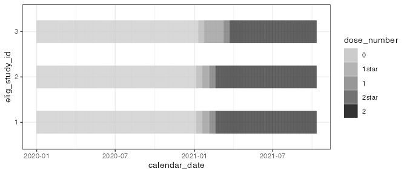
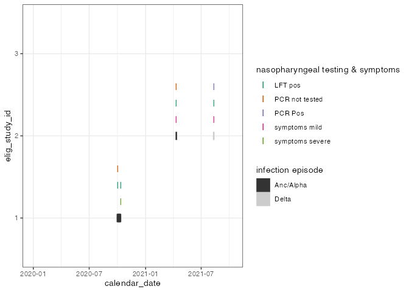
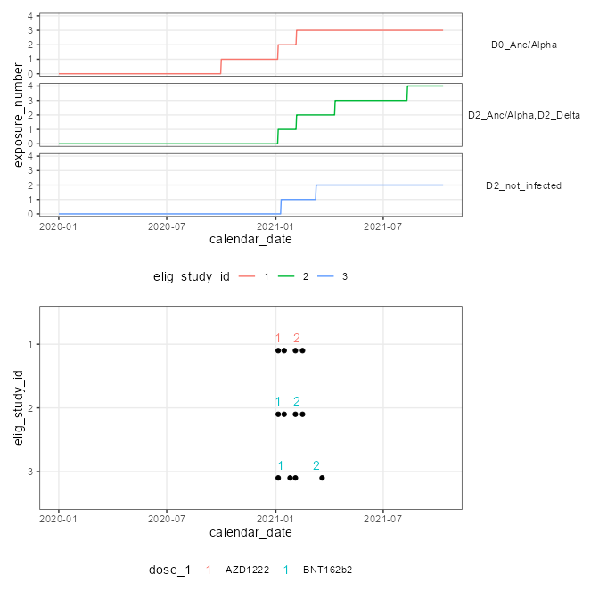

The goal of chronogram is to “cast” and annotate metadata, laboratory and clinical data into a tidy-like data structure. This bridges between a LIMS / database style data warehouse and data that is ready for interrogation to test biological hypotheses.
chronogram was designed during the SARS-CoV-2 pandemic (2019-). However, it is pathogen, vaccine and symptoms agnostic.
Installation
Install the current version from GitHub:
# install.packages("devtools")
devtools::install_github("FrancisCrickInstitute/chronogram")If you have not installed packages from github before, you will to setup your GitHub account to interact with R.
Why should I use chronogram?
To aggregate study data regularly 🕓, and repetitively 🔁. Perhaps your study has rolling recruitment, ongoing data generation or incremental analysis. Outsource that effort to
chronogram.To reproducibly aggregate data within and across several studies & users 👩💻👨💻. Stop troubleshooting joins by hand.
To provide a versatile data shape poised for new or follow-up analyses without needing re-aggregation 🛫.
When shouldn’t I use chronogram?
Your study is completed. You have assembled a clean, de-duplicated and fully annotated data object. You have finished all data analysis. Congratulations! 🥳 Don’t reinvent the wheel here.
How do I use chronogram?
The chronogram workflow can be divided into assembly, annotation and finally, filtering, windowing and selecting data for a specific analysis.
chronogram assembly
cg_assemble()combines cleaned metadata, experimental data, and a range of calendar dates into a chronogram.cg_add_experiment()allows the adding of further experiments
Further details:
assembly vignette for a step-by-step guide, or the quickstart.
SQL vignette explains
chronogramassembly from an SQL database.An introduction to the chronogram class
chronogram annotation
Annotate vaccines

Label each day for each participant with the number of doses they have received, including support for a lag period between the reciept of a dose and its immunological priming effect. Annotate vaccines here.
Annotate infection episodes

Symptoms, point-of-care tests, and laboratory tests of infection rarely occur on exactly the same study day. chronogram finds, fills and annotates these tests and symptoms into episodes of infection. Annotate episodes here.
Annnotate exposures

After annotating vaccines and infection episodes, these can be combined to annotate exposures - encounters with antigen from either infection or vaccination.
chronogram filtering, window and select
dplyr::filter()to filter a chronogram based on metadata (eg vaccine formulation)cg_window_by_metadata()to window around an event such as 14 days after each participant’s vaccinecg_window_by_episode()picks a window around infection episodes
See these functions at work in our brief primer demonstrating how to a pass chronogram to a variety of statistical tests.